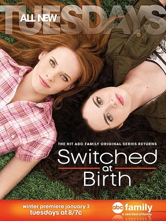

The genetics
Genetics sets the series in motion and frames its central question. A blood-type mismatch in a school biology lab, followed by DNA testing, reveals that Bay and Daphne were switched at birth, and an earlier paternity test had already led Angelo to wrongly conclude that Regina was unfaithful and abandon the family. The series then weighs heredity against upbringing: Daphne turns out to share John's athletic talent and Kathryn's love of cooking, and Bay shares Regina's artistic gift, yet each girl is shaped by the family and community that raised her, and both end up accepting both families as their own. Genetic testing is shown as a routine, reliable tool whose results carry great emotional weight rather than as science in itself. The series is better known for its portrayal of Deaf culture and American Sign Language.
The story
In Kansas City, teenager Bay Kennish, raised by the wealthy John and Kathryn Kennish, finds in a school biology lab that her blood type is incompatible with her parents'. Genetic testing confirms that she was switched at birth with Daphne Vasquez, who is deaf after childhood meningitis and was raised by the single mother Regina Vasquez in a working-class neighbourhood. The Kennishes invite Regina, Daphne and Regina's mother Adriana to live in their guest house, and the two families try to come to terms with each other. Bay searches for her biological father, Angelo Sorrento, who, it emerges, had abandoned Regina after a DNA test showed that Daphne was not his child. Over five seasons the girls discover traits they share with their biological parents, Bay becomes an artist and Daphne a basketball player and cook, and the series follows their romances, careers and the Deaf community at Carlton School for the Deaf.